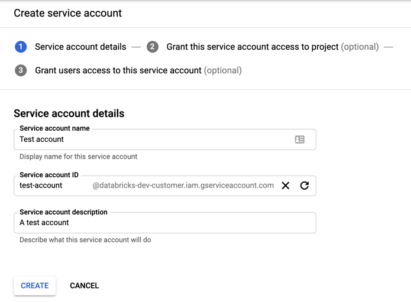
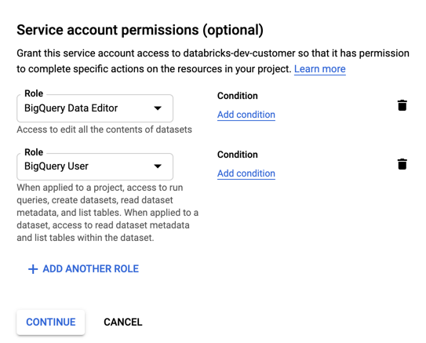
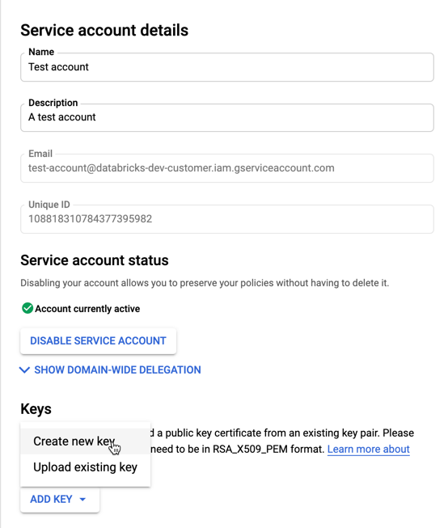
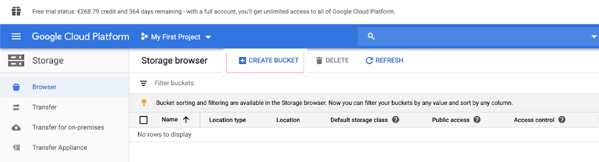
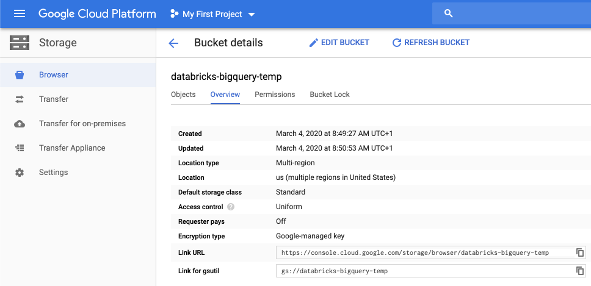
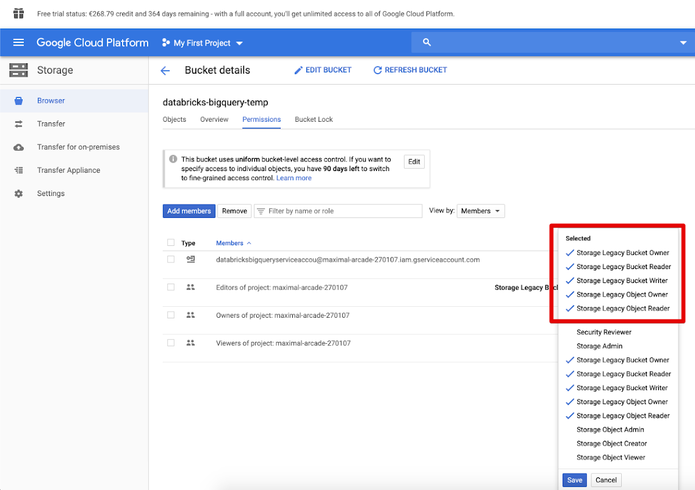

Google BigQuery
This article describes how to read from and write to Google BigQuery tables in Databricks.
Note
You may prefer Lakehouse Federation for managing queries on BigQuery data. See Run queries using Lakehouse Federation.
You must connect to BigQuery using key-based authentication.
Permissions
Your projects must have specific Google permissions to read and write using BigQuery.
Note
This article discusses BigQuery materialized views. For details, see the Google article Introduction to materialized views. To learn other BigQuery terminology and the BigQuery security model, see the Google BigQuery documentation.
Reading and writing data with BigQuery depends on two Google Cloud projects:
Project (
project): The ID for the Google Cloud project from which Databricks reads or writes the BigQuery table.Parent project (
parentProject): The ID for the parent project, which is the Google Cloud Project ID to bill for reading and writing. Set this to the Google Cloud project associated with the Google service account for which you will generate keys.
You must explicitly provide the project and parentProject values in the code that accesses BigQuery. Use code similar to the following:
spark.read.format("bigquery") \
.option("table", table) \
.option("project", <project-id>) \
.option("parentProject", <parent-project-id>) \
.load()
The required permissions for the Google Cloud projects depend on whether project and parentProject are the same. The following sections list the required permissions for each scenario.
Permissions required if project and parentProject match
If the IDs for your project and parentProject are the same, use the following table to determine minimum permissions:
Databricks task |
Google permissions required in the project |
|---|---|
Read a BigQuery table without materialized view |
In the
|
Read a BigQuery table with materialized view |
In the
In the materialization project:
|
Write a BigQuery table |
In the
|
Permissions required if project and parentProject are different
If the IDs for your project and parentProject are different, use the following table to determine minimum permissions:
Databricks task |
Google permissions required |
|---|---|
Read a BigQuery table without materialized view |
In the
In the
|
Read a BigQuery table with materialized view |
In the
In the
In the materialization project:
|
Write a BigQuery table |
In the
In the
|
Step 1: Set up Google Cloud
Enable the BigQuery Storage API
The BigQuery Storage API is enabled by default in new Google Cloud projects in which BigQuery is enabled. However, if you have an existing project and the BigQuery Storage API isn’t enabled, follow the steps in this section to enable it.
You can enable the BigQuery Storage API using the Google Cloud CLI or the Google Cloud Console.
Create a Google service account for Databricks
Create a service account for the Databricks cluster. Databricks recommends giving this service account the least privileges needed to perform its tasks. See BigQuery Roles and Permissions.
You can create a service account using the Google Cloud CLI or the Google Cloud Console.
Create a Google service account using Google Cloud CLI
gcloud iam service-accounts create <service-account-name>
gcloud projects add-iam-policy-binding <project-name> \
--role roles/bigquery.user \
--member="serviceAccount:<service-account-name>@<project-name>.iam.gserviceaccount.com"
gcloud projects add-iam-policy-binding <project-name> \
--role roles/bigquery.dataEditor \
--member="serviceAccount:<service-account-name>@<project-name>.iam.gserviceaccount.com"
Create the keys for your service account:
gcloud iam service-accounts keys create --iam-account \
"<service-account-name>@<project-name>.iam.gserviceaccount.com" \
<project-name>-xxxxxxxxxxx.json
Create a Google service account using Google Cloud Console
To create the account:
Click IAM and Admin in the left navigation pane.
Click Service Accounts.
Click + CREATE SERVICE ACCOUNT.
Enter the service account name and description.
Click CREATE.
Specify roles for your service account. In the Select a role drop-down, type
BigQueryand add the following roles:Click CONTINUE.
Click DONE.
To create keys for your service account:
In the service accounts list, click your newly created account.
In the Keys section, select ADD KEY > Create new key button.
Accept the JSON key type.
Click CREATE. The JSON key file is downloaded to your computer.
Important
The JSON key file you generate for the service account is a private key that should be shared only with authorized users, because it controls access to datasets and resources in your Google Cloud account.
Create a Google Cloud Storage (GCS) bucket for temporary storage
To write data to BigQuery, the data source needs access to a GCS bucket.
Click Storage in the left navigation pane.
Click CREATE BUCKET.
Configure the bucket details.
Click CREATE.
Click the Permissions tab and Add members.
Provide the following permissions to the service account on the bucket.
Click SAVE.
Step 2: Set up Databricks
To configure a cluster to access BigQuery tables, you must provide your JSON key file as a Spark configuration. Use a local tool to Base64-encode your JSON key file. For security purposes do not use a web-based or remote tool that could access your keys.
When you configure your cluster:
In the Spark Config tab, add the following Spark config. Replace <base64-keys> with your Base64-encoded JSON key file. Replace the other items in brackets (such as <client-email>) with the values of those fields from your JSON key file.
credentials <base64-keys>
spark.hadoop.google.cloud.auth.service.account.enable true
spark.hadoop.fs.gs.auth.service.account.email <client-email>
spark.hadoop.fs.gs.project.id <project-id>
spark.hadoop.fs.gs.auth.service.account.private.key <private-key>
spark.hadoop.fs.gs.auth.service.account.private.key.id <private-key-id>
Read and write to a BigQuery table
To read a BigQuery table, specify
df = spark.read.format("bigquery").option("table",<table-name>).load()
To write to a BigQuery table, specify
df.write.format("bigquery").mode("<mode>").option("temporaryGcsBucket", "<bucket-name>").option("table", <table-name>).save()
where <bucket-name> is the name of the bucket you created in Create a Google Cloud Storage (GCS) bucket for temporary storage.
Create an external table from BigQuery
Important
This feature is not supported by Unity Catalog.
You can declare an unmanaged table in Databricks that will read data directly from BigQuery:
CREATE TABLE chosen_dataset.test_table
USING bigquery
OPTIONS (
parentProject 'gcp-parent-project-id',
project 'gcp-project-id',
temporaryGcsBucket 'some-gcp-bucket',
materializationDataset 'some-bigquery-dataset',
table 'some-bigquery-dataset.table-to-copy'
)